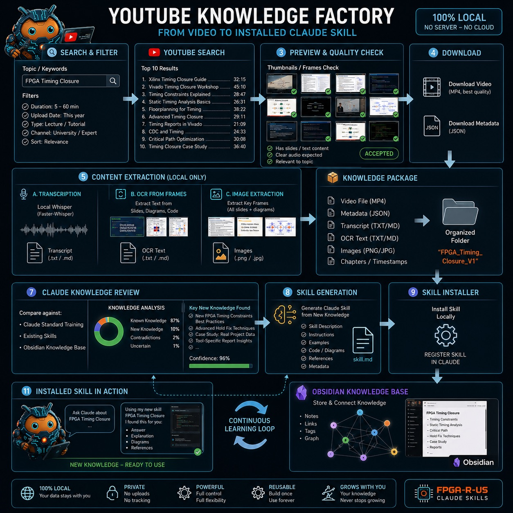
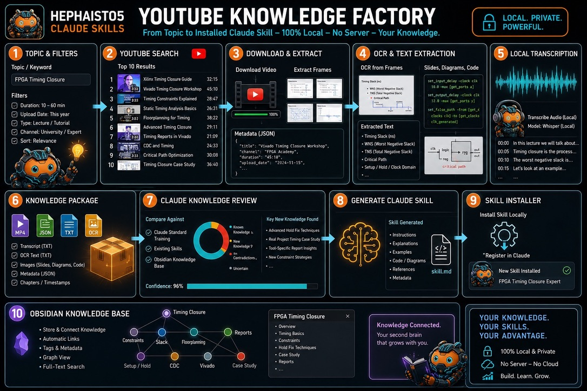

YouTube Knowledge Factory
Vom Vortrag zum installierten Claude-Skill. Ein Thema suchen, das beste Video prüfen, lokal herunterladen, Ton und Folien in Text verwandeln, mit dem vorhandenen Wissen vergleichen, nur das Neue zum Skill machen, installieren, in Obsidian verknüpfen. Alles auf dem eigenen Rechner, kein Server, keine Cloud.


Was ein Durchlauf liefert
- Thema und Filter: Dauer, Datum, Vortrag oder Tutorial, Kanal, Relevanz.
- Die besten zehn Treffer, mit Vorschau geprüft: Folien, klarer Ton, zum Thema.
- Video und Metadaten lokal gespeichert.
- Transkript mit Whisper, OCR von Folien und Code, Schlüsselbilder.
- Ein Wissenspaket in einem Ordner: MP4, JSON, TXT, Bilder, Kapitel.
- Abgleich mit dem, was Claude, die vorhandenen Skills und Obsidian schon wissen.
- Nur das Neue wird zum Skill: Beschreibung, Anleitung, Beispiele, Code, Quellen.
- Installiert und registriert. Beim nächsten Mal weiß Claude es.
Skills, die es schon gibt
- Python Claude (Modus 1/12) DE · EN
- Golden Python Claude (Modus 2/12) DE · EN
- Testbench Claude (Modus 3/12) DE · EN
- Verilog Claude (Modus 4/12) DE · EN
- RTL Claude (Modus 5/12) DE · EN
- Vivado Claude (Modus 6/12) DE · EN
- Timing Claude (Modus 7/12) DE · EN
- Bitstream Claude (Modus 8/12) DE · EN
- Flash Claude (Modus 9/12) DE · EN
- Saleae Claude (Modus 10/12) DE · EN
- Documentation Claude (Modus 11/12) DE · EN
- Deploy Claude (Modus 12/12) DE · EN
- fpga-golden-model - Build a golden model for FPGA designs
Jeder Skill ist eine Markdown-Datei nach dem Claude-Skill-Format, lesbar auf GitHub. Lizenz: siehe LICENSE des Repositories. Beziehen über den Skill-Shop.